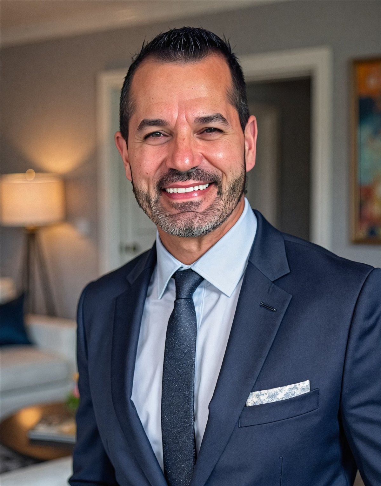
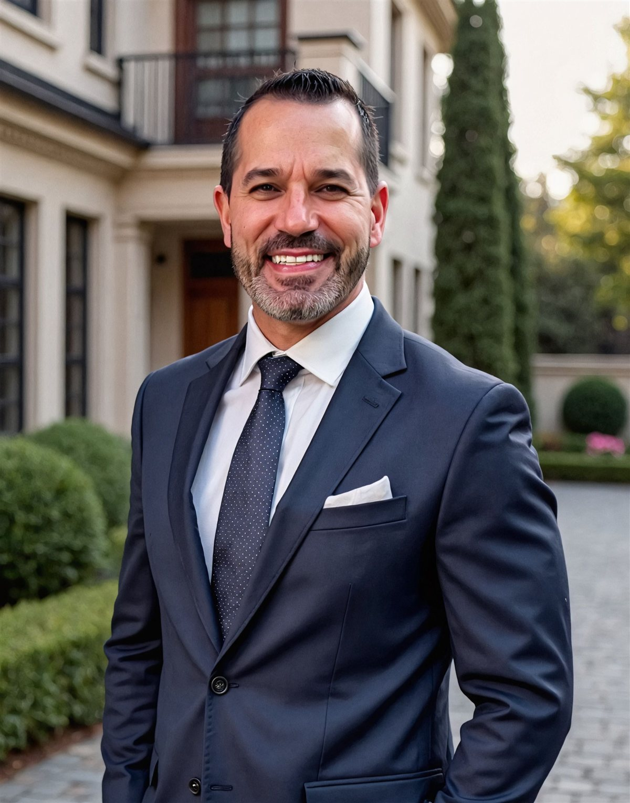

Client Brand Asset
The foundation for every avatar video script, caption, and piece of written content produced for Danny Gomes & Legacy Realty Partners.


Section 1
Danny doesn't sell. He steadies. His voice is the voice of someone who has carried weight before and won't flinch under it now.
Section 2
Danny's content speaks to two audiences at once. Every script should work for both.
Heirs, executors, and adult children who have usually just lost a parent and now face an unfamiliar, intimidating legal and financial process. They are grieving, often overwhelmed, and wary of being "sold to." They need to feel safe before they feel informed.
Lawyers representing families in probate, plus trustees and professional fiduciaries who refer real estate work. They need to see competence, reliability, and that Danny will make them look good to their clients. Speak to them as a credible peer, never as a salesperson.
Section 3
This is the spine of every piece. It shows up as:
Honor and discipline are demonstrated, not announced. Show them through clarity, follow-through, and straight talk — not by repeatedly invoking his résumé.
Warmth and steadiness for grieving families; quiet expertise for attorneys. These serve the lead trait — they never overtake it.
Section 4
First person — Danny speaks as himself ("I").
Section 5
His military service, faith, immigrant roots, and family life are real assets, but they stay in the background. Let the behavior (discipline, honor, reliability) carry the brand rather than the biography.
Section 6
Slow down. Acknowledge the moment first, information second. Short sentences. No jargon without translation. Permission-giving ("There's no rush to decide today").
"Losing a parent is hard enough without a legal process you didn't ask for. I'll handle the real estate side so you can focus on your family."
Tighten up. Lead with competence and reliability. Reference the process accurately (IAEA authority, court confirmation, timelines) to signal you speak their language.
"Whether your client has full or limited authority under the IAEA, I'll manage the listing to the letter — notices, pricing, confirmation, and overbids handled cleanly."
Plain-language teacher. Make the complex feel manageable. One idea per sentence. Always close with a calm next step.
Section 7
honor, integrity, steady, guide, walk you through, every step, handled, trusted, clear, straight answer, no surprises, take care of, with precision, you can count on, here for you, at your pace.
Hype and pressure language (act now, don't miss out, hot deal, crush it, game-changer), salesy superlatives (#1, the best, world-class), slang and exclamation-point energy, and anything that reads as rushing a grieving family.
When referencing the process, be correct: personal representative, executor vs. administrator, IAEA full vs. limited authority, Notice of Proposed Action, court confirmation, overbid, probate referee, Inventory & Appraisal. Precision is the brand. Pull specifics from the Knowledge Base below.
Section 8
Section 9
| Do | Don't |
|---|---|
| Acknowledge the loss before the logistics | Jump straight into selling |
| Give the honest, complete answer | Sugarcoat or oversimplify to win the deal |
| Use precise probate terminology | Use hype, slang, or pressure tactics |
| Speak as "I" with calm authority | Sound like a team brochure or a hard-sell ad |
| Show honor through follow-through | Keep retelling the military / biography story |
| Close with a low-pressure, caring next step | End with urgency or a countdown |
Section 10
"If you're watching this, you may have recently lost someone — and now there's a house, and paperwork, and a court process you never planned for. I'm Danny Gomes. Handling exactly this is what I do, and I'll walk you through it one step at a time."
"When you refer a probate listing to me, you're handing it to someone who knows the timeline, the forms, and the confirmation process cold. Your client gets taken care of, and you get a partner who makes the real estate side a non-issue."
"Not every estate has to go through probate in California. It depends on how the property was held and what it's worth. Let me explain the main cases simply — and then, because every situation is different, I'll always point you to an attorney for the legal call."
"Whatever you decide, you'll have a straight answer and someone in your corner. When you're ready, I'm here."
Reference Library
The subject-matter source of truth for Danny's probate content. Pair every script with this library to keep terminology and process details accurate.
What is probate in California?
In California, probate is the court-supervised legal process used to transfer a deceased person's probate assets to the correct heirs or beneficiaries, after paying valid debts, taxes, and administration costs. The probate division of the superior court appoints a personal representative (executor or administrator), oversees estate administration, and issues final orders that clear title to property.
What is a "probate estate"?
A probate estate consists of all property legally owned by the decedent at death that does not pass automatically by non-probate transfers such as living trusts, beneficiary designations, joint tenancy with right of survivorship, or transfer-on-death deeds. Common probate assets include solely owned real estate, bank and brokerage accounts without named beneficiaries, certain business interests, and valuable personal property.
Which California court handles probate?
Probate matters are handled by the probate division of the superior court in the county where the decedent resided at death or where the property is located. Large counties like Los Angeles and San Diego have dedicated probate departments with their own local rules, forms, and calendars.
What is the purpose of probate?
The main purposes of probate are to (1) identify and gather the decedent's assets, (2) determine and pay valid debts and taxes, (3) resolve disputes about wills and heirship, and (4) distribute any remaining assets to the legally entitled heirs or beneficiaries under court supervision. Probate creates a clear paper trail and court orders that confirm who owns the property after the decedent's death.
What does "testate" vs. "intestate" mean?
A person dies "testate" if they leave a valid will and "intestate" if they die without a valid will. In a testate estate, the will usually names an executor and specifies beneficiaries; in an intestate estate, California's intestate succession statutes determine who inherits and who can be appointed as administrator.
What is intestate succession?
Intestate succession is the set of California laws that decide who inherits a decedent's probate assets when there is no valid will. Typically, priority goes first to a surviving spouse or registered domestic partner, then children, then more distant relatives such as parents, siblings, and nieces or nephews, depending on who survives the decedent.
When is probate required in California?
Probate is generally required when a decedent dies owning probate assets in California whose combined gross value exceeds the state's small-estate thresholds and those assets are not otherwise transferable by simplified procedures. Probate is especially likely if the decedent owned real estate titled solely in their name, or significant financial accounts with no beneficiary or joint owner.
What is a "small estate" in California probate?
As of 2026, a "small estate" for purposes of the general small-estate affidavit procedure under Probate Code section 13100 means a gross value of California real and personal property not exceeding $184,500; some updated statewide and county materials also reference higher limits in specific contexts. For simplified petitions to determine succession to real property or a primary residence, higher value caps — up to $750,000 for a primary residence — may apply.
What are common non-probate transfers that avoid probate?
Probate is often avoided when assets are held or structured as: (1) property in a properly funded revocable living trust, (2) accounts or policies with valid pay-on-death or transfer-on-death beneficiaries, (3) property held in joint tenancy with right of survivorship, or (4) surviving spouse rights in some community property situations. These assets typically pass directly to the named beneficiaries or surviving co-owners without formal probate.
Do all estates have to go through probate?
No. If all assets pass through non-probate mechanisms (trusts, beneficiary designations, joint tenancy, etc.) or the estate qualifies as a small estate, formal probate can often be avoided. However, many California households still require probate because they hold appreciated real estate only in the decedent's name.
Does having a will avoid probate?
No. A will directs how probate assets should be distributed and who should serve as executor, but it does not by itself avoid probate. If the estate otherwise requires probate based on asset type and value, the will is lodged with the court and used as the roadmap for administration.
Who is the "personal representative"?
The personal representative is the court-appointed fiduciary who manages the estate during probate; this is an executor if named in a will or an administrator if appointed when there is no will or the named executor cannot serve. The personal representative collects and safeguards assets, pays debts and taxes, manages property, and distributes the remainder according to the will or intestate succession laws.
What is an executor?
An executor is the personal representative named in the decedent's will and formally appointed by the probate court to administer the estate. The executor's powers and duties are defined by the will, California Probate Code, and court orders.
What is an administrator?
An administrator is the personal representative appointed by the court when there is no will, the will does not name an executor, or the named executor is unable or unwilling to serve. California law sets a priority list (spouse, children, grandchildren, parents, siblings, etc.) that guides who may be appointed.
Who are "heirs" and "beneficiaries"?
Heirs are the people who would inherit under intestate succession if there were no will, while beneficiaries are those specifically named in a will or trust to receive assets. In practice, some people may be both heirs and beneficiaries.
What is a probate referee?
A probate referee is a court-appointed appraiser who values non-cash assets in a probate estate, including real property, business interests, and some personal property. The referee's appraisals are used to complete the Inventory and Appraisal form and to set baseline values for statutory fees and minimum sale prices.
What is the role of a probate real estate agent?
A probate-savvy real estate agent assists the personal representative and attorney in pricing, marketing, and selling estate real property in compliance with the Independent Administration of Estates Act (IAEA), court orders, and local rules. The agent must understand full vs. limited authority, notice requirements, court confirmations, and overbidding procedures.
What are the basic steps in a typical California probate?
While details vary, a standard California probate generally includes: (1) Filing a Petition for Probate (DE-111) and related forms in superior court to open the estate. (2) Attending the initial hearing where the judge appoints a personal representative and issues Letters Testamentary or Letters of Administration. (3) Notifying heirs, beneficiaries, and creditors, including publication of notice in a newspaper and mailing of required notices. (4) Collecting, inventorying, and appraising estate assets using the Inventory and Appraisal (DE-160), often with a probate referee. (5) Managing the estate — paying ongoing expenses, evaluating and paying valid creditor claims, and maintaining or selling property. (6) Preparing and filing an accounting and Petition for Final Distribution, obtaining court approval, distributing assets, and closing the estate.
How long does probate usually take in California?
Many sources describe a best-case timeline of about 6–9 months for a straightforward, uncontested probate, with more common durations of 9–12 months and 12–18 months or longer for complex or disputed estates. Major time drivers include court calendar backlogs, the 4-month creditor claim period after Letters are issued, property sales (especially court-confirmed sales), tax issues, and any litigation.
What starts the probate process?
Probate is started by filing a Petition for Probate and supporting documents with the probate division of the superior court, usually in the county of the decedent's residence at death. After filing, the court sets a hearing date to decide whether to appoint the requested personal representative.
What are "Letters Testamentary" and "Letters of Administration"?
These are court documents that officially authorize the personal representative to act on behalf of the estate. Letters Testamentary issue when an executor is appointed under a will; Letters of Administration issue when an administrator is appointed without a will or when the named executor cannot serve.
What notices must be given at the beginning of probate?
The petitioner must mail notice of the Petition for Probate to certain relatives and interested persons and publish a notice in a newspaper of general circulation. After the court appoints a personal representative, that representative sends a Notice of Administration to Creditors to known and reasonably ascertainable creditors.
What are the typical costs of a California probate?
Typical costs include court filing fees (often around $435 per main petition in many counties), publication costs, probate referee appraisal fees, certified copy fees, and other administrative expenses. California courts note that administrative costs are often well over $1,000 and can be much higher in larger or contested estates.
How are attorney and personal representative fees calculated?
California Probate Code provides a statutory fee schedule based on the gross value of the probate estate (not net equity), with specified percentages for the first tiers of value and possible "extraordinary" fees for additional work. Both the personal representative and the attorney can petition for these statutory and extraordinary fees, subject to court approval.
When is real estate part of a probate estate?
Real estate is part of the probate estate if it is titled solely in the decedent's name or in certain forms of co-ownership without survivorship rights (such as tenancy in common). Real property held in a properly funded trust, in joint tenancy with right of survivorship, or via a valid transfer-on-death deed generally passes outside of probate.
What is the Independent Administration of Estates Act (IAEA)?
The IAEA is a California law that allows personal representatives to administer estates with less court supervision if they are granted "full" or "limited" authority, particularly regarding the sale of real property. With full authority, the representative can usually sell real estate without court confirmation if they meet certain notice and pricing requirements.
What is "full authority" vs. "limited authority" under IAEA?
Full authority allows a personal representative to sell estate real property and take many other actions without prior court approval, subject to giving a Notice of Proposed Action and complying with minimum price rules. Limited authority requires court confirmation for many real estate sales and still subjects actions to closer court supervision.
What is a Notice of Proposed Action (NOPA)?
A NOPA is a written notice the personal representative sends to heirs and beneficiaries describing a proposed action — such as a real estate sale — giving them at least 15 days to object before the action is taken. If no timely written objection is received, the representative may proceed without court confirmation (when full authority exists).
What is the minimum price requirement for probate real estate sales?
Under IAEA rules, real property sales generally must achieve at least 90% of the probate referee's appraised value as shown on the Inventory and Appraisal, unless the court orders otherwise or a reappraisal is performed. Court-confirmed sales must also satisfy specific overbid formulas if competing bids are made.
What is a court-confirmed probate sale?
A court-confirmed sale is a real estate transaction that must be approved at a probate court hearing, usually when the personal representative has limited authority or when court approval is otherwise required. The representative files a Report of Sale and Petition for Order Confirming Sale of Real Property (DE-260), and the judge may accept overbids before confirming the sale.
How does the overbid process work in California probate court?
At the confirmation hearing, the court applies a statutory overbid formula to determine the minimum first overbid: 10% of the first $10,000 of the accepted offer plus 5% of the balance. Qualified bidders with cashier's checks for at least 10% of their bid may compete in open court, and the property is confirmed to the highest acceptable bidder.
How long does it take to sell a house in probate?
With full IAEA authority, a probate sale often looks similar to a standard sale, with a 30–45-day escrow period after an offer is accepted, plus the time it took to get Letters and complete required notices. Under limited authority, the need to obtain a confirmation hearing and allow for overbids can extend the sale process by 30–60 days or more, often resulting in 60–120 days from listing to closing.
What is a small-estate affidavit under Probate Code section 13100?
It is a procedure that allows successors to collect certain personal property without formal probate when the total gross value of the decedent's California real and personal property subject to this method does not exceed the statutory small-estate limit (such as $184,500, with some materials referencing updated figures). Successors sign an affidavit, wait required time periods, and present it to the institution holding the property.
Are there simplified procedures for real property below certain values?
Yes. California law provides simplified petitions to determine succession to real property or a primary residence when the property value falls under specified caps (for example, up to $750,000 for a primary residence under certain sections). These procedures involve filing specific Judicial Council forms in court but are usually faster and less expensive than full probate.
What does a California real estate agent need to know to work probate listings?
Key knowledge areas include: understanding the probate timeline, IAEA full vs. limited authority, NOPA requirements, court confirmation and overbid rules, C.A.R. probate forms (such as the Probate Listing Addendum and Probate Purchase Agreement Addendum), and local court practices in the counties where the agent works. Agents must also know how to coordinate with probate attorneys, escrow officers, and probate referees.
What C.A.R. forms are specific to probate?
The California Association of Realtors issues forms such as the Probate Listing Addendum (PLA) and Probate Purchase Agreement Addendum (PAA or PPA), which modify standard listing and purchase agreements for probate situations. Updated versions clarify how offers subject to court confirmation work and how deposits are handled if an overbidder wins at the confirmation hearing.
Is there a probate certification for California real estate agents?
Yes. C.A.R. sponsors a course called "The Probate Process from A-Z for Real Estate Professionals," which can lead to a Probate Property Specialist certification for California licensees who complete the training and exam. The course is often taught by a State Bar-certified probate attorney and covers legal basics, forms, timelines, and marketing strategies.
What other training options exist for probate-focused agents?
National and private providers offer programs such as Probate Mastery, All The Leads, Probate Fox, and others that emphasize lead generation, systems, and communication skills for probate agents and investors. These typically complement, rather than replace, California-specific training and C.A.R. forms education.
How can agents market themselves as probate specialists?
Effective strategies include building relationships with probate attorneys and fiduciaries, consistently reaching out to personal representatives identified through public court filings, and creating educational content (blogs, videos, webinars) explaining the California probate process in plain language. Agents often brand themselves as "Probate & Trust Real Estate Specialists," highlight certifications, and showcase case studies of successfully resolved probate sales.
A consolidated FAQ list of common end-user questions a chatbot or avatar may receive about California probate and probate real estate. Many overlap earlier sections; answers can be mapped or redirected to the core content above.